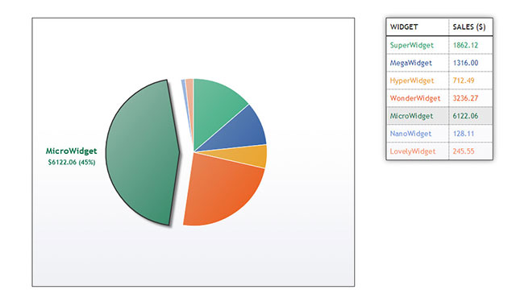
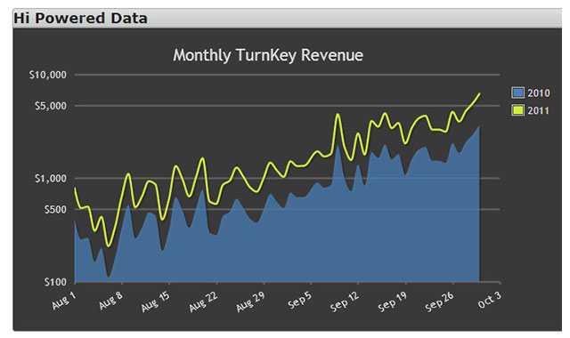

HTML5 Canvas简单实用的图表插件-Chart.js - Pie Chart with Custom Tooltips
Simple HTML5 Charts using the canvas element
jQuery之家
返回下载页
Line Chart
Line Chart with custom tooltips
Bar Chart
Doughnut Chart
Pie Chart
Pie Chart with custom tooltips
Polar Area Chart
Radar Area Chart
如果你喜欢这个插件，那么你可能也喜欢:

html5和jQuery动态饼状图表插件

jqPlot-扩展性极强的jQuery图表插件